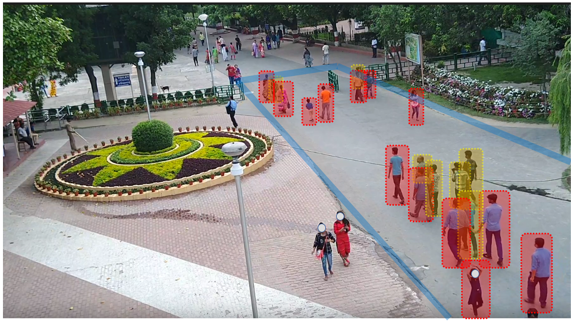
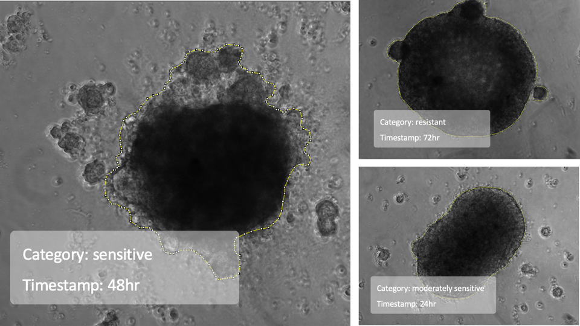

Autonoumous Imaging For Machine Perception



AIMP LABS
Calcutta, India
- Oct 2020AIMP Labs goes online! Though founded a while ago we did not have a formal web presence, but now we do.
- Jan 2020 We are proud to announce our collaboration with Hirak Lab, University College London, to work together on computer vision for tumour pathology. Details in the Research page.
- June 2019 Aditya Shankar Pal successfully defends his masters thesis. Congratulations, Aditya! Details in the Research page.